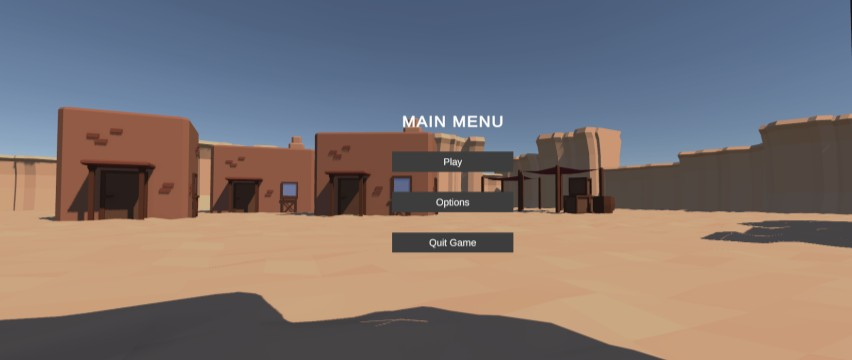
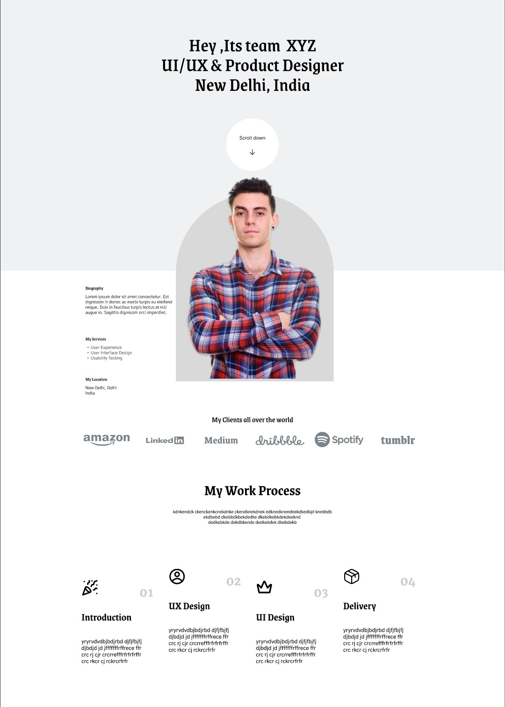

Programming & Data
Python, SQL, Java, NumPy, Pandas and data handling.
PythonSQLJavaNumPyPandas
● Hello, I'm
B.Tech Computer Science & Design graduate interested in Artificial Intelligence, Machine Learning, Deep Learning and NLP. I enjoy building practical projects and creating thoughtful digital experiences.

● About me
I'm Ananthika D., a B.Tech graduate in Computer Science and Design from Vimal Jyothi Engineering College, Kannur. My main technical interests are Python, Machine Learning, Deep Learning, NLP and data analytics.
Through academic work, training and hands-on projects, I have practised data preprocessing, model building and evaluation, computer vision, NLP workflows and UI/UX prototyping. I am looking for an opportunity to learn, contribute and grow as a technology professional.
● My toolkit
Tools and concepts I have studied and practised through coursework and projects.
Python, SQL, Java, NumPy, Pandas and data handling.
Supervised learning, preprocessing, feature engineering, model evaluation and tuning.
Neural networks, CNNs, transfer learning and model training.
Text preprocessing, classification, image processing and object detection practice.
Building and testing small applications and sharing work through version control.
Designing interfaces, wireframes and interactive prototypes.
● Featured work
A selection of academic, AI/ML and design work. Open the repositories to explore the code and notebooks.

An AI-based project exploring animal behaviour and emotion detection using audio and video analysis with machine learning and computer vision techniques.

A 3D first-person survival game developed using Unity3D and C#, with player movement, shooting, health systems and enemy AI.

Responsive dashboard interface design work using Figma, including wireframes, user flows and interactive prototypes.
Academic NLP work using text preprocessing and TF-IDF with classical machine-learning models and a neural-network approach.
Classification practice using a heart-disease dataset, including preprocessing, model training and evaluation with classification metrics.
● Education
Vimal Jyothi Engineering College, Kannur
CGPA: 6.84 / 10
GHSS Sreepuram, Manakadavu
Score: 83.33%
GHSS Sreepuram, Manakadavu
Score: 95.56%
● Experience & learning
Worked on responsive wireframes and interactive Figma prototypes for client projects. Collaborated with developers and QA teams as part of project workflows.
Hands-on learning in Python, data preprocessing, supervised learning, deep learning, NLP, model evaluation and project development.
● Contact
Open to entry-level opportunities, internships and collaborative projects in AI/ML and related technology roles.